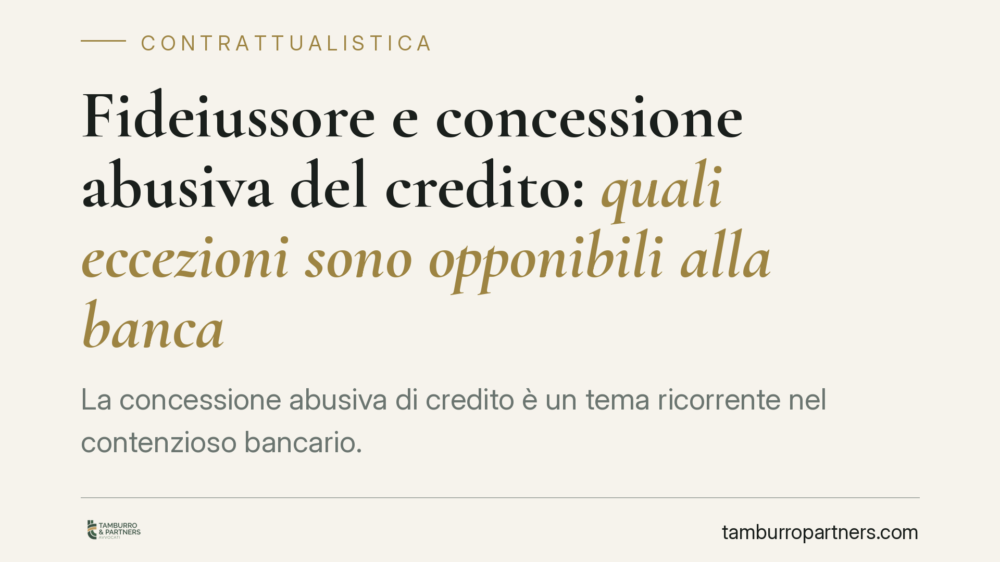

Fideiussore e concessione abusiva del credito: quali eccezioni sono opponibili alla banca
La concessione abusiva di credito è un tema ricorrente nel contenzioso bancario. Chi ha prestato una fideiussione si chiede se la condotta scorretta della banca possa essere fatta valere per difendersi dall'escussione. La questione è meno lineare di quanto appaia: incrocia la responsabilità aquiliana della banca e il perimetro delle eccezioni opponibili dal garante ex art. 1945 c.c.

Il fatto e il perché conta
La "concessione abusiva di credito" indica la condotta della banca che eroga o mantiene finanziamenti a favore di un'impresa già in stato di dissesto, così ritardandone l'emersione e aggravando l'esposizione complessiva. Il profilo è noto da tempo nella giurisprudenza di legittimità, a partire da Cass., Sez. Un., n. 7029/2006, che ha inquadrato la fattispecie come illecito della banca verso i terzi creditori.
Il punto delicato, in chiave di contrattualistica delle garanzie, è un altro: il fideiussore può opporre alla banca quella condotta per difendersi dall'escussione? La domanda tocca migliaia di garanti personali, spesso soci o amministratori di PMI, chiamati a rispondere con il proprio patrimonio.
Inquadramento normativo
Conviene tenere distinti due piani.
Primo piano, la responsabilità della banca. La concessione abusiva è tradizionalmente ricostruita come illecito extracontrattuale ex art. 2043 c.c.: la banca che finanzia un'impresa decotta può essere tenuta a risarcire i creditori danneggiati dall'artificioso prolungamento dell'attività. Si tratta di una pretesa risarcitoria, non di una causa automatica di riduzione del debito restitutorio. Le somme erogate, di regola, restano dovute.
Secondo piano, le eccezioni del fideiussore. L'art. 1945 c.c. consente al garante di opporre al creditore tutte le eccezioni che spettano al debitore principale, salvo quelle personali di quest'ultimo. La leva difensiva, dunque, non nasce dal nulla: presuppone che il debitore principale disponga, nel rapporto di finanziamento, di un'eccezione effettivamente opponibile.
In che forma la condotta abusiva può diventare eccezione? Le strade astrattamente percorribili sono essenzialmente due: l'eccezione di compensazione di un eventuale credito risarcitorio vantato verso la banca; e il richiamo ai doveri di buona fede e correttezza nell'esecuzione del contratto (artt. 1175 e 1375 c.c.), che possono incidere sulla legittimità della pretesa creditoria. Sono percorsi tecnicamente impegnativi, da valutare caso per caso e con cautela: non esiste un automatismo tra abuso della banca e caducazione o riduzione della garanzia.
Va inoltre considerata l'attualità del profilo del merito creditizio, oggi valorizzato dal Codice della crisi d'impresa e dell'insolvenza (D.Lgs. 14/2019), che impone obblighi di valutazione e segnalazione tanto al debitore quanto, in diversa misura, agli intermediari.
Implicazioni pratiche
Per il garante, il messaggio operativo è duplice.
Da un lato, la condotta abusiva della banca non è irrilevante: può fondare, in presenza di presupposti rigorosi, strumenti difensivi in sede di opposizione all'escussione.
Dall'altro, l'onere della prova è severo. Non basta allegare genericamente che la banca "ha dato credito a chi non lo meritava". Occorre dimostrare lo stato di dissesto già conoscibile, la condotta della banca, il nesso causale e il danno concreto. Senza questo corredo probatorio, l'eccezione resta affermazione sterile.
Attenzione, infine, alle clausole del contratto di fideiussione. Molte garanzie contengono deroghe convenzionali all'art. 1945 c.c. o rinunce preventive alle eccezioni. Dove operano, restringono sensibilmente lo spazio difensivo del garante. La loro validità ed effettiva portata vanno verificate, perché non tutte le clausole di rinuncia reggono al vaglio di legittimità.
Cosa fare in concreto
- Recuperate il testo della fideiussione e verificate la presenza di clausole di rinuncia alle eccezioni o di deroga all'art. 1945 c.c.: determinano il margine difensivo.
- Ricostruite la storia del rapporto bancario: tempistiche delle erogazioni, segnali di crisi dell'impresa, documentazione contabile e centrale rischi.
- Raccogliete la prova dello stato di dissesto già conoscibile al momento del credito: non limitatevi ad allegazioni generiche.
- Valutate la strategia processuale più coerente (compensazione, buona fede, contestazione del quantum) prima di proporre opposizione.
- Consigliamo di esaminare la singola posizione con un professionista, data la forte dipendenza della questione dai fatti e dalle clausole concrete.
Avvertenza
La materia è in evoluzione e le soluzioni dipendono dai dati del singolo rapporto. Le affermazioni di questo contributo hanno carattere generale e non anticipano l'esito di alcuna controversia.
---
*Contributo informativo a cura di Tamburro & Partners Avvocati - Avv. Giuseppe Tamburro. Non costituisce parere legale.*
Ogni contratto ha il suo equilibrio.
Se vuoi una revisione delle clausole o una redazione su misura, scrivi allo studio. Ti rispondiamo entro un giorno lavorativo.